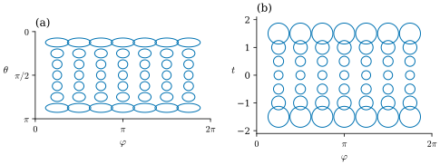
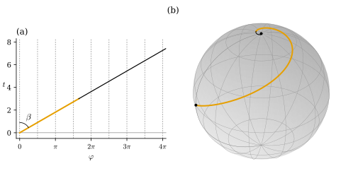

38.2 The Induced Metric and Conformal Coordinates
Goals
- immersion \(\mathbf{x}\)의 induced metric \(g(X, Y) = \inner{d\mathbf{x}(X)}{d\mathbf{x}(Y)}\)을 정의하고, 그 행렬 \((D\mathbf{x})^{\mathsf T}D\mathbf{x}\)와 reparametrization에 따른 변환 규칙을 증명할 수 있다.
- \(g\)로 곡면 위 곡선의 길이, 두 방향 사이의 각, 영역의 넓이를 계산할 수 있다.
- conformal coordinates \(g = e^{2\mu}(du^2 + dv^2)\)를 판정하고, sphere의 stereographic coordinates와 Mercator coordinates에서 \(\mu\)를 구할 수 있다.
- 둘러싼 공간이 없는 abstract Riemannian metric과 embedding theorem이 무엇을 말하는지 정확히 진술할 수 있다.
Prerequisites
- Section 38.1: differential Proposition 38.1.4, immersion Definition 38.1.6, Proposition 38.1.7.
- Gram matrix Definition 1.5.12, Proposition 1.5.13.
- Track 3에서 상기만 하는 것: first fundamental form Definition 7.1.1, Example 7.1.2, Example 7.1.5, isothermal parametrization Definition 7.4.7, Example 7.4.9, Example 7.4.10.
Motivation
Section 38.1에서 \(d\mathbf{x}\)는 parameter 평면의 같은 길이의 vector들을 점마다 다른 비율로 늘였다. 단위원이 타원이 되었다(Figure 38.1.1). 그러니 parameter 평면의 유클리드 길이로는 곡면 위의 길이를 잴 수 없다. sphere의 \((\theta, \varphi)\) 평면에서 수평선분 \(\theta = \theta_0\), \(0 \le \varphi \le 2\pi\)는 \(\theta_0\)가 무엇이든 길이가 \(2\pi\)이지만, 곡면 위의 위도원은 극에 가까울수록 짧아진다. 곡면 위의 길이는 parameter의 문제가 아니라 \(d\mathbf{x}\)의 문제다.
해결은 간단하다. 두 parameter vector의 inner product를 parameter 평면에서 재지 말고, \(d\mathbf{x}\)로 공간에 옮긴 다음 \(\R^3\)에서 잰다. 그렇게 얻은 inner product가 이 절의 주인공이다. 이것 하나로 길이, 각, 넓이가 모두 정해지고, 거꾸로 이것만 알면 곡면이 공간에 어떻게 놓였는지 몰라도 그 기하를 계산할 수 있다.
The Induced Metric
Definition 38.2.1 (induced metric). \(\mathbf{x}\colon U \to \R^3\)이 immersion이고 \(q \in U\)일 때, \(X, Y \in \R^2\)에 대하여
로 정한 \(g_q\)를 \(q\)에서 \(\mathbf{x}\)의 induced metric(유도 계량)이라 한다. 점마다 \(g_q\)를 붙인 \(g\)를 \(\mathbf{x}\)가 유도한 metric이라 부른다.
Track 3은 같은 대상을 tangent plane \(T_pS\) 위의 quadratic form으로 정의하고 first fundamental form이라 부른다(Definition 7.1.1). \(d\mathbf{x}_q\)가 \(\R^2\)를 \(T_pS\) 위로 보내는 isomorphism이므로 두 정의는 같은 것을 서로 다른 쪽에서 본 것이다. 점마다 inner product를 붙인 것을 일반적으로 Riemannian metric이라 한다(Section 21.1, 아래 Abstract Metrics).
Proposition 38.2.2 (the induced metric in coordinates). \(\mathbf{x}\colon U \to \R^3\)이 smooth이고 \(g_q\)를 (38.2.1)로 정의하자.
- (a) \(g_q\)는 symmetric bilinear form이고, positive definite일 필요충분조건은 \(d\mathbf{x}_q\)가 injective인 것이다.
- (b) \(g_q(X, Y) = X^{\mathsf T}\mathsf{g}(q)\,Y\)이고 그 행렬은 \(\mathsf{g} = (D\mathbf{x})^{\mathsf T}D\mathbf{x} = \begin{pmatrix} E & F \\ F & G \end{pmatrix}\), \(E = \inner{\mathbf{x}_u}{\mathbf{x}_u}\), \(F = \inner{\mathbf{x}_u}{\mathbf{x}_v}\), \(G = \inner{\mathbf{x}_v}{\mathbf{x}_v}\)이다. 곧 \(\mathsf{g}\)는 \(\mathbf{x}_u, \mathbf{x}_v\)의 Gram matrix이고, symmetric product로는 \(g = E\,du^2 + 2F\,du\,dv + G\,dv^2\)이다.
- (c) \(h\colon \tilde U \to U\)가 diffeomorphism이고 \(\mathbf{y} = \mathbf{x}\circ h\)이면 \(\mathbf{y}\)의 행렬은 \(\tilde{\mathsf g}(p) = Dh(p)^{\mathsf T}\,\mathsf{g}(h(p))\,Dh(p)\)이다.
Proof. (a) \(d\mathbf{x}_q\)가 linear이고 \(\R^3\)의 inner product가 symmetric bilinear이므로 \(g_q\)도 그렇다. \(g_q(X, X) = \abs{d\mathbf{x}_q(X)}^2 \ge 0\)이고, 이것이 \(0\)인 것은 \(d\mathbf{x}_q(X) = 0\)일 때다. 따라서 “\(X \neq 0 \Rightarrow g_q(X, X) \gt 0\)”은 kernel이 \(\{0\}\)인 것과 같다. (b) \(d\mathbf{x}_q(X) = D\mathbf{x}(q)X\)(Proposition 38.1.4(a))이므로 \(g_q(X, Y) = (D\mathbf{x}X)^{\mathsf T}(D\mathbf{x}Y) = X^{\mathsf T}(D\mathbf{x})^{\mathsf T}D\mathbf{x}\,Y\)이다. \((D\mathbf{x})^{\mathsf T}D\mathbf{x}\)의 \((i, j)\) 성분은 \(D\mathbf{x}\)의 \(i\)번째 열과 \(j\)번째 열의 inner product, 곧 \(\mathbf{x}_u, \mathbf{x}_v\)의 inner product다(Definition 1.5.12). (c) Proposition 38.1.4(d)에서 \(D\mathbf{y}(p) = D\mathbf{x}(h(p))\,Dh(p)\)이므로 \((D\mathbf{y})^{\mathsf T}D\mathbf{y} = Dh^{\mathsf T}(D\mathbf{x})^{\mathsf T}D\mathbf{x}\,Dh\)이다.
(a)는 immersion이라는 조건이 정확히 “\(g\)가 inner product”라는 조건임을 말한다. (c)는 Track 3의 Proposition 7.1.7을 행렬로 쓴 것이다.
Example 38.2.3 (induced metrics of the running examples). (a) sphere: \(g = r^2\,d\theta^2 + r^2\sin^2\theta\,d\varphi^2\)(Example 7.1.2). torus of revolution: \(g = r^2\,du^2 + (R + r\cos u)^2\,dv^2\)(Example 7.1.5). 이 둘은 \(F = 0\)이라 coordinate curve끼리 수직이다. Figure 38.1.1의 타원의 반지름이 \(\sqrt E = r\)과 \(\sqrt G = R + r\cos u\)였던 이유다.
(b) saddle의 graph 매개화는 \(\mathbf{x}_u = (1, 0, 2u)\), \(\mathbf{x}_v = (0, 1, -2v)\)이므로
이다. 원점에서는 \(\mathsf{g} = I_2\)이고, 원점에서 멀어지면 \(F \neq 0\)이라 coordinate curve가 비스듬히 만난다.
(c) polar reparametrization \(\mathbf{y}(\rho, t)\)(Example 38.1.2(d))의 행렬은 Proposition 38.2.2(c)로 구한다. \(Dh = \begin{pmatrix}\cos t & -\rho\sin t\\ \sin t & \rho\cos t\end{pmatrix}\)이고, 계산하면
이다. \(\mathbf{y}_\rho, \mathbf{y}_t\)로 직접 계산해도 같다(Exercise 38.2.2).
Verification: verify/v-38-2-induced-metric.py
Non-example 38.2.4 (parameter length is not length). sphere의 parameter 곡선 \(c(s) = (\theta_0, s)\), \(0 \le s \le 2\pi\)는 \((\theta, \varphi)\) 평면의 유클리드 길이가 \(2\pi\)이다. 그러나 \(g(c', c') = G = r^2\sin^2\theta_0\)이므로 곡면 위의 길이는 \(2\pi r\sin\theta_0\)이고, \(\theta_0 \to 0\)이면 \(0\)으로 간다. parameter 평면의 inner product \(\inner{X}{Y}\)는 어떤 매개화에서나 같은 값을 주므로 곡면에 대해 아무것도 알려 주지 않는다 [CMU-DDG L12].
Measuring with the Metric
\(g\)가 있으면 곡면 위의 측정은 모두 parameter 평면에서 할 수 있다. 다음 명제는 Track 3에서 하나씩 정의하고 증명한 것을 \(g\)의 언어로 모은 것이다.
Proposition 38.2.5 (length, angle, and area from the metric). \(\mathbf{x}\colon U \to \R^3\)이 immersion이라 하자.
- (a) piecewise \(C^1\) 곡선 \(c\colon [a, b] \to U\)에 대하여 \(\mathbf{x}\circ c\)의 길이는 \(\displaystyle\int_a^b\sqrt{g_{c(s)}(c'(s), c'(s))}\,ds\)이다.
- (b) \(0\)이 아닌 \(X, Y \in \R^2\)에 대하여 \(d\mathbf{x}_q(X)\)와 \(d\mathbf{x}_q(Y)\) 사이의 각 \(\vartheta\)는 \(\cos\vartheta = g_q(X, Y)/\big(\abs{X}_g\abs{Y}_g\big)\)를 만족한다(\(\abs{X}_g = \sqrt{g_q(X, X)}\)).
- (c) \(\mathbf{x}\)가 \(\overline{Q}\)를 포함하는 open set에서 injective이고 \(Q \subseteq U\)가 domain of integration이면, \(\mathbf{x}(Q)\)의 넓이는 \(\displaystyle\int_Q\sqrt{\det\mathsf{g}}\;du\,dv = \int_Q\sqrt{EG - F^2}\;du\,dv\)이다.
Proof. (a) chain rule에서 \((\mathbf{x}\circ c)' = d\mathbf{x}(c')\)이므로 \(\abs{(\mathbf{x}\circ c)'} = \sqrt{g(c', c')}\)이고, 곡선의 길이의 정의(Proposition 7.1.9)에 넣는다. (b) \(\R^3\)에서 \(\cos\vartheta = \inner{a}{b}/(\abs{a}\abs{b})\)에 \(a = d\mathbf{x}(X)\), \(b = d\mathbf{x}(Y)\)를 넣고 (38.2.1)을 쓴다. (c) Track 3의 정의(Definition 7.3.2)에서 넓이는 \(\int_Q\abs{\mathbf{x}_u\times\mathbf{x}_v}\,du\,dv\)이고, Lagrange identity \(\abs{a\times b}^2 = \abs{a}^2\abs{b}^2 - \inner{a}{b}^2\)(Theorem 1.6.16)에서 \(\abs{\mathbf{x}_u\times\mathbf{x}_v}^2 = EG - F^2\)이다.
Example 38.2.6 (area of a saddle patch). saddle의 graph 매개화를 반지름 \(a\)인 원판 \(Q = \{u^2 + v^2 \le a^2\}\) 위에서 보자. (38.2.2)에서 \(\sqrt{EG - F^2} = \sqrt{1 + 4(u^2 + v^2)}\)이므로 polar coordinates로
이다. \(a = \tfrac12\)이면 \(A = \tfrac{\pi}{6}(2\sqrt2 - 1) = 0.9574\)로, 그림자인 원판의 넓이 \(\pi/4 = 0.7854\)보다 크다. \(a\)가 작으면 \(A = \pi a^2 + \pi a^4 + O(a^6)\)이어서, 원점에서는 곡면이 평면처럼 넓이를 잰다((38.2.2)에서 원점의 \(\mathsf{g} = I_2\)).
Verification: verify/v-38-2-induced-metric.py
Conformal Coordinates
곡선에서는 arc length parametrization이 계산을 단순하게 했다. \(\abs{\gamma'} = 1\)이면 \(d\gamma\)가 길이를 바꾸지 않는다. 곡면에서 같은 일을 하려면 \(\mathsf{g} = I_2\)인 좌표가 필요한데, 그런 좌표는 일반적으로 없다. 그런 좌표가 있으면 곡면이 그 근처에서 평면과 local isometry가 되기 때문이다(Corollary 7.2.8). 지구의 지도가 늘 무언가를 왜곡하는 이유다. 대신 거의 언제나 얻을 수 있는 차선책이 있다. 길이는 늘이되 방향에 관계없이 같은 비율로 늘이는 좌표다 [Cr §3.1.1].
Definition 38.2.7 (conformal coordinates). immersion \(\mathbf{x}\colon U \to \R^3\)에 대하여 smooth function \(\mu\colon U \to \R\)가 있어
이면 \(\mathbf{x}\)를 conformal coordinates(등각 좌표)라 한다. Track 3은 같은 것을 isothermal parametrization이라 부른다(Definition 7.4.7). \(e^{\mu}\)는 길이의 배율이고 \(e^{2\mu}\)는 넓이의 배율이며, \(e^{2\mu}\)를 conformal factor라 부른다.
지수 함수로 쓰는 것은 배율이 항상 양수임을 식에 넣어 두기 위해서다. \(\mu\)는 어떤 실숫값이든 될 수 있다. 세 함수 \(E, F, G\) 대신 함수 하나 \(\mu\)만 기억하면 되므로, conformal coordinates에서는 많은 식이 짧아진다.
Proposition 38.2.8 (conformal means angle-preserving). immersion \(\mathbf{x}\)와 \(q \in U\)에 대하여 다음은 동치다. (i) \(\mathsf{g}(q) = \lambda I_2\)인 \(\lambda \gt 0\)이 있다. (ii) \(d\mathbf{x}_q\)가 각을 보존한다. 곧 \(0\)이 아닌 모든 \(X, Y\)에 대하여 \(d\mathbf{x}_q(X)\)와 \(d\mathbf{x}_q(Y)\) 사이의 각이 \(X\)와 \(Y\) 사이의 각과 같다. (iii) \(d\mathbf{x}_q\)가 원을 원으로 보낸다. 곧 \(\abs{d\mathbf{x}_q(X)}\)가 단위원 \(\abs{X} = 1\) 위에서 상수다. 따라서 \(\mathbf{x}\)가 conformal coordinates인 것은 모든 \(q\)에서 (ii)가 성립하는 것과 같고, 이때 \(\mu = \tfrac12\log\lambda\)이다.
Proof. (i)⇒(ii): \(g_q(X, Y) = \lambda\inner{X}{Y}\)를 Proposition 38.2.5(b)에 넣으면 \(\lambda\)가 약분되어 \(\cos\vartheta = \inner{X}{Y}/(\abs{X}\abs{Y})\)이다. (ii)⇒(i): \(X = e_1, Y = e_2\)가 수직이므로 \(F = g(e_1, e_2) = 0\)이다. \(X = e_1 + e_2\)와 \(Y = e_1 - e_2\)도 수직이므로 \(0 = g(e_1 + e_2, e_1 - e_2) = E - G\)이다. 따라서 \(\mathsf{g} = E\,I_2\)이고 \(E \gt 0\)이다(Proposition 38.2.2(a)). (i)⇔(iii): \(\abs{d\mathbf{x}(X)}^2 = E\cos^2\alpha + 2F\cos\alpha\sin\alpha + G\sin^2\alpha\)(\(X = (\cos\alpha, \sin\alpha)\))이 \(\alpha\)에 무관할 필요충분조건은 \(\alpha = 0, \pi/2, \pi/4\)의 값이 같은 것, 곧 \(E = G\)이고 \(F = 0\)인 것이다. 마지막 문장은 \(e^{2\mu} = \lambda\)이다.
Figure 38.2.1은 이 명제를 그림으로 보인다. 두 패널 모두 unit sphere의 parameter 평면이고, 파란 곡선은 격자점 \(q\)마다 “\(d\mathbf{x}\)가 길이 \(0.16\)인 vector로 보내는 \(X\)들”, 곧 \(g\)의 작은 단위원 \(\{q + X : g_q(X, X) = 0.16^2\}\)이다. (a)의 표준 좌표 \((\theta, \varphi)\)에서는 극(위아래 끝)에 가까울수록 이 곡선이 \(\varphi\) 방향으로 길쭉한 타원이 된다. 극 근처에서는 \(\varphi\)를 많이 움직여도 곡면 위에서는 조금만 움직이기 때문이다. (b)의 Mercator coordinates \((\varphi, t)\)(Example 38.2.10)에서는 모든 곡선이 원이다. 크기는 극으로 갈수록 커지지만(\(e^{-\mu} = \cosh t\)) 모양은 언제나 원이다. 이것이 conformal coordinates다. 지도의 언어로 말하면, (b)는 작은 원을 작은 원으로 그리는 지도다.

Example 38.2.9 (stereographic coordinates). stereographic projection의 inverse를 반지름 \(r\)인 sphere로 늘인 \(\mathbf{x}(u, v) = r\,\dfrac{(2u,\ 2v,\ u^2 + v^2 - 1)}{1 + u^2 + v^2}\)를 보자. Example 7.4.9의 계산(\(r = 1\))에 \(r^2\)을 곱하면 \(E = G = 4r^2/(1 + u^2 + v^2)^2\), \(F = 0\)이므로
인 conformal coordinates다. 원점 \((u, v) = (0, 0)\)은 남극이고 거기서 \(e^{\mu} = 2r\)이다. 원점에서 멀어질수록 \(e^{\mu}\)가 \(0\)으로 가는데, 이것은 평면의 먼 부분이 북극 근처의 작은 영역으로 눌려 들어가기 때문이다. 한 가지 주의할 점이 있다. 원점에서 \(\mathbf{x}_u = (2r, 0, 0)\), \(\mathbf{x}_v = (0, 2r, 0)\)이므로 \(\mathbf{x}_u\times\mathbf{x}_v = (0, 0, 4r^2)\)는 남극에서 위쪽, 곧 sphere의 안쪽을 향한다. 이 좌표는 \((u, v)\)의 순서로는 orientation이 §7의 바깥쪽 \(\mathbf{N}\)과 반대다.
Verification: verify/v-38-2-induced-metric.py
Example 38.2.10 (Mercator coordinates and the loxodrome). Mercator projection(Example 7.4.10)은 \(t = \log\cot(\theta/2)\)이다. 이것을 풀면 \(\sin\theta = \operatorname{sech}t\), \(\cos\theta = \tanh t\)이므로 inverse는
이다. \(\mathbf{x}_\varphi = r\operatorname{sech}t\,(-\sin\varphi, \cos\varphi, 0)\), \(\mathbf{x}_t = r\operatorname{sech}t\,(-\tanh t\cos\varphi,\ -\tanh t\sin\varphi,\ \operatorname{sech}t)\)이므로 \(E = G = r^2\operatorname{sech}^2t\), \(F = 0\)이다. 곧
인 conformal coordinates이고, \((\varphi, t)\)의 순서에서 \(\mathbf{x}_\varphi\times\mathbf{x}_t = r^2\operatorname{sech}^2t\,(\mathbf{x}/r)\)는 바깥쪽이다.
conformal coordinates는 각을 보존하므로, parameter 평면에서 meridian(\(\varphi = \) 상수, \(t\)축 방향)과 일정한 각 \(\beta\)를 이루는 직선 \(t = \varphi\cot\beta\)는 곡면 위에서도 모든 meridian과 같은 각 \(\beta\)로 만난다. 이 곡선이 loxodrome(항정선)이다. 길이는 Proposition 38.2.5(a)로 계산한다. 직선을 \(t\)로 매개화하면 \(c' = (\tan\beta, 1)\)이고 \(g(c', c') = r^2\operatorname{sech}^2t\,(1 + \tan^2\beta) = r^2\operatorname{sech}^2t/\cos^2\beta\)이므로
이다. \(T \to \infty\)이면 \(\arctan(\sinh T) \to \pi/2\)이므로, 적도에서 북극까지의 loxodrome은 북극 둘레를 무한히 많이 돌지만 길이는 유한한 \(r\pi/(2\cos\beta)\)이다. \(\beta = 60^\circ\), \(r = 1\)이면 \(\pi\)다.
Verification: verify/v-38-2-induced-metric.py
Figure 38.2.2의 왼쪽 (a)에서 주황 선분은 Mercator 평면의 직선이고, 회색 점선은 meridian이다. 직선은 모든 점선과 같은 각 \(\beta = 60^\circ\)로 만난다. 오른쪽 (b)는 같은 곡선을 sphere 위에 그린 것이다. 적도의 검은 점에서 출발한 주황 곡선이 meridian과 같은 각을 유지하며 북쪽으로 올라가고, 검은 부분은 그 뒤를 이어 북극 둘레를 점점 좁게 돈다. 평면에서는 끝없이 뻗는 직선이 sphere에서는 북극으로 빨려 들어간다. 그 길이는 (38.2.9)대로 유한하다.

Non-example 38.2.11 (coordinates that are not conformal). (a) sphere의 표준 좌표는 \(E = r^2 \neq r^2\sin^2\theta = G\)(적도 밖)이므로 conformal이 아니다(Example 7.4.8(c)). Figure 38.2.1(a)의 타원이 그 모습이다. (b) saddle의 graph 매개화는 (38.2.2)에서 \(F = -4uv\)와 \(E - G = 4(u^2 - v^2)\)이 동시에 \(0\)인 원점에서만 \(\mathsf{g}\)가 \(I_2\)의 상수배다. 원점 하나에서 각을 보존하는 것과 conformal coordinates인 것(모든 점에서)은 다르다.
Theorem 38.2.12 (existence of conformal coordinates). \(\mathbf{x}\colon U \to \R^3\)이 immersion이고 \(q \in U\)이면, \(q\)의 open neighborhood \(V\)와 open set \(W \subseteq \R^2\), diffeomorphism \(h\colon W \to V\)가 있어 \(\mathbf{x}\circ h\)는 conformal coordinates다.
이 정리는 증명하지 않는다. 증명에는 편미분방정식(Beltrami equation)을 푸는 해석학이 필요하다. do Carmo는 존재를 가정하고 쓰며 증명을 참고문헌으로 돌리고 [dC §4-2], Lee는 S. S. Chern의 비교적 초등적인 증명을 소개한다 [Lee-IRM, p. 222]. 강의 노트는 이 사실을 uniformization theorem과 연결해 설명한다 [Cr §3.1.1]. 이 장에서는 존재만 쓰고, 계산에는 위의 sphere 예처럼 식이 알려진 conformal coordinates만 쓴다.
Abstract Metrics and Embedding Theorems
지금까지 \(g\)는 immersion \(\mathbf{x}\)에서 나왔다. 그러나 길이, 각, 넓이를 계산하는 데 쓴 것은 \(g\)뿐이었다(Proposition 38.2.5). 그렇다면 \(\mathbf{x}\) 없이 점마다 inner product만 주어도 기하를 할 수 있다. 이것이 Riemannian metric(리만 계량)의 생각이다(Section 21.1). §7의 hyperbolic plane \(\mathbb{U}^2 = \{(x, y) : y \gt 0\}\), \(g = (dx^2 + dy^2)/y^2\)가 그런 예다. 이것은 \(\mu = -\log y\)인 conformal 꼴이지만, 그것을 induced metric으로 갖는 surface를 처음부터 주지 않았다. \(g\)만으로 길이를 재면 \(y \to 0\)으로 가는 선분의 길이가 무한대가 된다(Exercise 38.2.5).
자연스러운 질문은 “주어진 metric은 어떤 immersion의 induced metric인가”이다. 답은 차원과 매끄러움에 따라 다르다. 다음 두 사실을 진술만 한다.
- (Hilbert) complete hyperbolic plane을 induced metric으로 갖는 \(\R^3\)의 regular surface(곧 \(\R^3\)으로의 isometric immersion)는 없다 [dC §5-10](증명은 dC §5-11).
- (Nash) 모든 Riemannian manifold는 충분히 높은 차원의 유클리드 공간으로 가는 어떤 embedding의 induced metric을 갖는다 [Lee-IRM, p. 117]. 차원을 낮추고 매끄러움을 \(C^1\)로 약하게 하면 놀라운 예가 생긴다. 강의 슬라이드는 평평한 torus가 \(\R^3\)에 \(C^1\)으로 isometric하게 embed된 그림을 보여 준다 [CMU-DDG L12].
sphere나 torus 같은 곡면은 parametrization 하나로 덮이지 않으므로 여러 조각을 쓴다. 조각들이 chart(차트, Definition 11.1.13)이고 그 모임이 atlas(아틀라스, Definition 11.2.5)다. 두 조각이 겹치는 곳에서 두 induced metric은 Proposition 38.2.2(c)의 규칙으로 서로 바뀌므로 같은 길이를 준다. immersion 없이 조각마다 metric을 주고 겹치는 곳에서 이 규칙을 요구한 것이 abstract Riemannian manifold이고, 둘러싼 공간 없이 기하를 하는 Track 3의 Part III가 그 위에 선다(Chapter 21).
Summary
- induced metric은 \(g(X, Y) = \inner{d\mathbf{x}(X)}{d\mathbf{x}(Y)}\)이고, 행렬은 \(\mathbf{x}_u, \mathbf{x}_v\)의 Gram matrix \((D\mathbf{x})^{\mathsf T}D\mathbf{x}\)이다. 좌표를 바꾸면 \(Dh^{\mathsf T}\mathsf{g}\,Dh\)로 변한다(Proposition 38.2.2).
- \(g\)가 inner product인 것은 \(\mathbf{x}\)가 immersion인 것과 같고, 길이, 각, 넓이는 모두 \(g\)로 계산된다(Proposition 38.2.5).
- conformal coordinates는 \(g = e^{2\mu}(du^2 + dv^2)\)인 좌표이고, 각을 보존하는 좌표와 같다(Proposition 38.2.8). sphere의 stereographic coordinates는 \(\mu = \log 2r - \log(1 + u^2 + v^2)\), Mercator coordinates는 \(\mu = \log r - \log\cosh t\)다.
- conformal coordinates는 국소적으로 항상 있다(Theorem 38.2.12, 진술만). metric만 주고 기하를 하는 것이 Riemannian metric이고, 그것을 \(\R^3\)의 곡면으로 실현할 수 있는지는 별개의 문제다(Hilbert, Nash).
다음 절에서는 tangent plane에 수직인 방향, 곧 unit normal \(\mathbf{N}\)을 본다. \(\mathbf{N}\)과 넓이를 함께 담는 2-form \(\mathbf{N}\,dA\)가 \(\tfrac12\,d\mathbf{x}\wedge d\mathbf{x}\)와 같다는 것을 증명하고, 그 적분인 vector area가 boundary만으로 정해진다는 것을 Stokes's theorem으로 보인다.
Exercises
Exercise 38.2.1 ★ cylinder \(\mathbf{x}(u, v) = (r\cos u, r\sin u, v)\)의 \(E, F, G\)를 구하고, \(r \neq 1\)이면 conformal coordinates가 아님을 보여라. \(\mathbf{y}(s, v) = (r\cos(s/r), r\sin(s/r), v)\)는 \(\mu = 0\)인 conformal coordinates임을 보이고, 이 사실의 기하학적 의미를 한 문장으로 써라.
Solution
\(\mathbf{x}_u = (-r\sin u, r\cos u, 0)\), \(\mathbf{x}_v = (0, 0, 1)\)이므로 \(E = r^2\), \(F = 0\), \(G = 1\)이다. \(E = G\)는 \(r = 1\)일 때뿐이다. \(\mathbf{y} = \mathbf{x}\circ h\), \(h(s, v) = (s/r, v)\), \(Dh = \diag(1/r, 1)\)이므로 Proposition 38.2.2(c)에서 \(\tilde{\mathsf g} = \diag(1/r, 1)\diag(r^2, 1)\diag(1/r, 1) = I_2\)이다. 곧 \(e^{2\mu} = 1\), \(\mu = 0\)이다. \(\mathsf{g} = I_2\)는 이 좌표가 평면의 띠에서 cylinder로 가는 local isometry임을 뜻한다. 종이를 말아 cylinder를 만들 수 있다는 사실이다(Example 7.2.9).
Exercise 38.2.2 ★ saddle의 polar reparametrization \(\mathbf{y}(\rho, t) = (\rho\cos t, \rho\sin t, \rho^2\cos 2t)\)의 \(\tilde E, \tilde F, \tilde G\)를 \(\mathbf{y}_\rho, \mathbf{y}_t\)로 직접 계산해 (38.2.3)과 같음을 확인하여라. 원점 근처(\(\rho \to 0\))에서 \(\tilde{\mathsf g}\)는 어떤 행렬에 가까운가?
Solution
\(\mathbf{y}_\rho = (\cos t, \sin t, 2\rho\cos 2t)\), \(\mathbf{y}_t = (-\rho\sin t, \rho\cos t, -2\rho^2\sin 2t)\)이다. \(\tilde E = \cos^2t + \sin^2t + 4\rho^2\cos^22t = 1 + 4\rho^2\cos^22t\), \(\tilde F = -\rho\sin t\cos t + \rho\sin t\cos t - 4\rho^3\cos 2t\sin 2t = -2\rho^3\sin 4t\), \(\tilde G = \rho^2 + 4\rho^4\sin^22t\)이다. \(\rho \to 0\)이면 \(\tilde{\mathsf g} \approx \diag(1, \rho^2)\)으로, 평면의 polar coordinates의 metric과 같다. 원점에서 saddle의 \(\mathsf{g}\)가 \(I_2\)였기 때문이다((38.2.2)).
Exercise 38.2.3 ★★ torus of revolution \((0 \lt r \lt R)\)의 좌표 \(u\)를 \(w(u) = \displaystyle\int_0^u\frac{r}{R + r\cos s}\,ds\)로 바꾸자. (a) \(w\)는 \(\R\)에서 \(\R\)로 가는 diffeomorphism임을 보여라. (b) \((w, v)\)가 conformal coordinates이고 \(e^{\mu} = R + r\cos u\)임을 보여라. (c) \(u\)가 한 바퀴(\(2\pi\)) 돌 때 \(w\)는 얼마나 변하는가? (\(\int_0^{2\pi}\frac{ds}{R + r\cos s} = \frac{2\pi}{\sqrt{R^2 - r^2}}\)를 써도 된다.)
Solution
(a) \(w'(u) = r/(R + r\cos u) \ge r/(R + r) \gt 0\)이므로 \(w\)는 strictly increasing이고 smooth이며, \(w(u + 2\pi) = w(u) + w(2\pi)\)(integrand가 주기 \(2\pi\))이므로 \(\R\) 위로 간다. inverse function theorem(Theorem 2.3.5)에 의해 inverse도 smooth다. (b) \(h(w, v) = (u(w), v)\)이면 \(Dh = \diag(du/dw, 1) = \diag((R + r\cos u)/r, 1)\)이고, Example 38.2.3(a)의 \(\mathsf{g} = \diag(r^2, (R + r\cos u)^2)\)에 Proposition 38.2.2(c)를 쓰면 \(\tilde{\mathsf g} = \diag\big((R + r\cos u)^2, (R + r\cos u)^2\big)\)이다. 따라서 \(e^{2\mu} = (R + r\cos u)^2\), 곧 \(e^\mu = R + r\cos u\)이다. (c) \(w(2\pi) = 2\pi r/\sqrt{R^2 - r^2}\)이다. \((R, r) = (2, 0.8)\)이면 \(2\pi\cdot 0.8/\sqrt{3.36} = 2.742\)이다. 그러므로 torus는 \(w\) 방향 주기 \(2.742\), \(v\) 방향 주기 \(2\pi\)인 직사각형을 conformal하게 감는다. 두 주기의 비는 torus의 모양을 conformal하게 구별하는 양이고 Chapter 43에서 다시 나온다.
Exercise 38.2.4 ★★ \(\mathbf{x}\colon U \to \R^3\)이 conformal factor \(e^{2\mu}\)인 conformal coordinates이고 \(h(s, t) = \lambda\,R_\alpha(s, t) + b\)(\(\lambda \gt 0\), \(R_\alpha\)는 각 \(\alpha\)의 회전, \(b \in \R^2\))라 하자. \(\mathbf{x}\circ h\)가 conformal coordinates이고 \(\tilde\mu = \mu\circ h + \log\lambda\)임을 보여라. 회전 대신 reflection을 쓰면 어떻게 되는가?
Solution
\(Dh = \lambda R_\alpha\)이고 \(R_\alpha^{\mathsf T}R_\alpha = I_2\)이므로 Proposition 38.2.2(c)에서 \(\tilde{\mathsf g} = \lambda^2R_\alpha^{\mathsf T}\big(e^{2\mu\circ h}I_2\big)R_\alpha = \lambda^2e^{2\mu\circ h}I_2 = e^{2(\mu\circ h + \log\lambda)}I_2\)이다. reflection \(P\)도 \(P^{\mathsf T}P = I_2\)이므로 같은 결론이 나온다. 다만 \(\det Dh \lt 0\)이 되어 orientation과 \(\mathbf{x}_s\times\mathbf{x}_t\)의 방향이 뒤집힌다(Exercise 38.1.3).
Exercise 38.2.5 ★★ hyperbolic plane \(\mathbb{U}^2\), \(g = (dx^2 + dy^2)/y^2\)에서 (a) 선분 \(\{(0, y) : \varepsilon \le y \le 1\}\)의 길이를 구하고 \(\varepsilon \to 0\)일 때의 극한을 말하여라. (b) 높이 \(y_0\)에서 수평 선분 \(\{(x, y_0) : 0 \le x \le a\}\)의 길이를 구하여라. (c) 이 metric을 \(e^{2\mu}(dx^2 + dy^2)\) 꼴로 쓰고 \(\mu\)를 구하여라.
Solution
(a) \(c(y) = (0, y)\)이면 \(c' = (0, 1)\), \(g(c', c') = 1/y^2\)이므로 길이는 \(\int_\varepsilon^1 dy/y = \log(1/\varepsilon)\)이고 \(\varepsilon \to 0\)이면 \(\infty\)이다. 유클리드 길이는 \(1 - \varepsilon \lt 1\)인데도 metric으로는 끝없이 길다. (b) \(\int_0^a dx/y_0 = a/y_0\)이다. 같은 유클리드 길이라도 아래로 갈수록 길다. (c) \(e^{2\mu} = 1/y^2\)이므로 \(\mu = -\log y\)이다. 이 \(g\)는 어떤 \(\R^3\)의 곡면에서 온 것도 아니다. 길이, 넓이, 각은 \(g\)만으로 정해진다(Abstract Metrics).
Exercise 38.2.6 ★ Coding. Implementation 상자의 함수로 unit sphere에서 meridian과 \(45^\circ\)를 이루는 loxodrome의 길이를 \(0 \le t \le 2\)와 \(0 \le t \le 20\)에서 계산하고, (38.2.9)의 값 및 극한 \(\pi/(2\cos 45^\circ) = \pi/\sqrt2\)와 비교하여라.
Solution
beta = np.pi / 4
line = lambda s: np.array([s * np.tan(beta), s])
for T in (2.0, 20.0):
print(f"T = {T:4.1f}: {length_via_metric(mercator, line, 0.0, T):.6f}"
f" exact {np.arctan(np.sinh(T)) / np.cos(beta):.6f}")
print(f"limit pi / sqrt 2 = {np.pi / np.sqrt(2):.6f}")
T = 2.0: 1.840967 exact 1.840967
T = 20.0: 2.221441 exact 2.221441
limit pi / sqrt 2 = 2.221441(38.2.9)에서 \(T = 2\)이면 \(\sqrt2\arctan(\sinh 2) = \sqrt2\cdot 1.301760 = 1.840967\)이다. \(T = 20\)에서는 \(\arctan(\sinh 20)\)이 \(\pi/2\)와 \(4\times 10^{-9}\)만큼 차이 나므로 극한값 \(\pi/\sqrt2 = 2.221441\)과 여섯째 자리까지 같다. \(T = 20\)이면 \(\varphi = 20\)이므로 곡선은 북극 둘레를 세 바퀴 넘게 돌았지만, 남은 길이는 거의 없다.